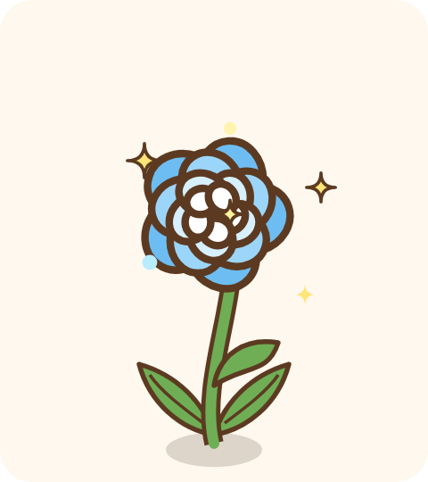
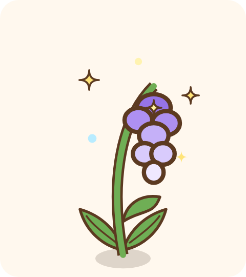
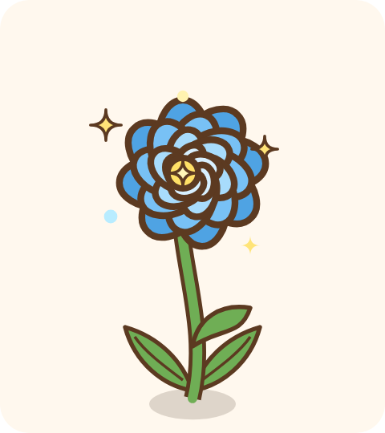

📖 はじめに（特別な花とは）
特別な花は、PREMIUMの方だけが植えられる花です。PREMIUMを始めた日を1日目として数えた継続日数に応じて、10日ごとに1種類ずつ、新しい花が植えられるようになります。現在は5種類で、実在する花をもとにしています。
庭タブで空きマスをタップして花を選ぶシートを開き、上の「特別な花」タブに切り替えると、解放された花が並びます。次の花までの日数も、このタブに表示されます。
🌸 特別な花の紹介
アプリ内の絵と、本物の花の特徴です。開花時期などは目安で、地域や年によって変わります。
Nemophila（ネモフィラ・ルリカラクサ）
春の丘をまるごと青く染める、空色の小さな花

- 解放される日: PREMIUMの継続日数が10日目になると、植えられるようになります。
- 必要なクローバー: 5個（片付けて「クローバーに戻す」と、同じ数が戻ります）。
- 咲くまでの日数: 標準の大きさで約4日（植えるたびに大きさがランダムで決まり、大きいほど日数が長くなります）。
本物のネモフィラについて
北アメリカ（カリフォルニア）が原産の一年草です。和名は「瑠璃唐草（ルリカラクサ）」。春（4〜5月ごろ）に、直径2〜3cmほどの澄んだ空色の花を咲かせ、群れて咲くと地面が青い絨毯のように見えます。
英名は「ベビーブルーアイズ（赤ちゃんの青い目）」。花びらの中心に向かって色が白くなり、小さな黒い点が入るものもあります。茨城県のひたち海浜公園の丘が、一面の青い景色で知られています。
花言葉は「可憐」「どこでも成功」など。
スズラン（鈴蘭）
細い茎に、白い小さな鈴が並んで揺れる花

- 解放される日: PREMIUMの継続日数が20日目になると、植えられるようになります。
- 必要なクローバー: 8個（片付けて「クローバーに戻す」と、同じ数が戻ります）。
- 咲くまでの日数: 標準の大きさで約6日（植えるたびに大きさがランダムで決まり、大きいほど日数が長くなります）。
本物のスズランについて
キジカクシ科（以前はユリ科とされました）の多年草で、日本では北海道や本州の涼しい高原・草地に自生します。5〜6月ごろ、細い茎に、白くて丸い小さな鈴の形の花が下向きに並んで咲き、甘い香りがします。
フランスでは5月1日に、幸せが訪れるようにとスズランを贈り合う習慣があります。花言葉は「幸福の再来」「純粋」など。
全草に毒があるため、口に入れないよう注意が必要です（切り花を生けた水も同様です）。
藤（フジ）
長い房が、上から下へ順に咲いていく花

- 解放される日: PREMIUMの継続日数が30日目になると、植えられるようになります。
- 必要なクローバー: 12個（片付けて「クローバーに戻す」と、同じ数が戻ります）。
- 咲くまでの日数: 標準の大きさで約8日（植えるたびに大きさがランダムで決まり、大きいほど日数が長くなります）。
本物の藤について
マメ科のつる性の落葉樹で、日本に自生します。4月下旬〜5月ごろ、紫色の蝶のような形の小さな花が、長い房になってたれ下がって咲きます。房は付け根から先のほうへ順番に咲き進みます。
藤棚に仕立てて、昔から親しまれてきました。栃木県の足利フラワーパークの大藤などが有名です。花言葉は「優しさ」「歓迎」など。
ヒマラヤの青いケシ（メコノプシス）
高い山にだけ咲く、空のように青い「幻の花」

- 解放される日: PREMIUMの継続日数が40日目になると、植えられるようになります。
- 必要なクローバー: 18個（片付けて「クローバーに戻す」と、同じ数が戻ります）。
- 咲くまでの日数: 標準の大きさで約10日（植えるたびに大きさがランダムで決まり、大きいほど日数が長くなります）。
本物のヒマラヤの青いケシについて
ケシ科メコノプシス属の花で、ヒマラヤ周辺の標高3,000〜5,000mほどの高山に自生します。夏（6〜8月ごろ）に、薄い花びらを広げた、空のように青い花を咲かせます。
暑さと乾燥が苦手で、涼しく湿った高地でないと育てにくいため、「幻の青いケシ」とも呼ばれます。ブータンの国花として知られています。
ブルーローズ（青いバラ）
長いあいだ「不可能」の象徴だった、青いバラ

- 解放される日: PREMIUMの継続日数が50日目になると、植えられるようになります。
- 必要なクローバー: 25個（片付けて「クローバーに戻す」と、同じ数が戻ります）。
- 咲くまでの日数: 標準の大きさで約12日（植えるたびに大きさがランダムで決まり、大きいほど日数が長くなります）。
本物のブルーローズについて
バラには青い色素（デルフィニジン）をつくる力がなく、自然交配や品種改良だけでは、本当に青い花はつくれないとされてきました。そのため、青いバラは「不可能」の象徴で、昔の花言葉も「不可能」でした。
2004年、サントリーと海外の企業が、パンジーの青い色素をつくる遺伝子を使って青い色のバラを開発したと発表し、2009年に「サントリーブルーローズ アプローズ」として発売されました。花言葉は「夢かなう」「奇跡」「神の祝福」に変わりました。実際の色は、青紫がかった淡い青です。
❓ よくある質問（FAQ）
Q 特別な花はどうすれば植えられますか？
PREMIUMにご登録のうえ、庭タブの花を選ぶシートの「特別な花」タブから植えます。継続日数が解放の日数に届いた花から、順に選べます。
Q 新しい特別な花が増えるのは、いつですか？
PREMIUMを始めた日を1日目として数え、10日ごとに1種類です。「特別な花」タブに、次の花まであと何日かが表示されます。
Q 特別な花は、通常の花とどう違いますか？
PREMIUMだけが植えられることと、植えるたびに大きさがランダムで決まることが違います。植えたあとの育ち方・移動・クローバーに戻す操作は、通常の花と同じです。